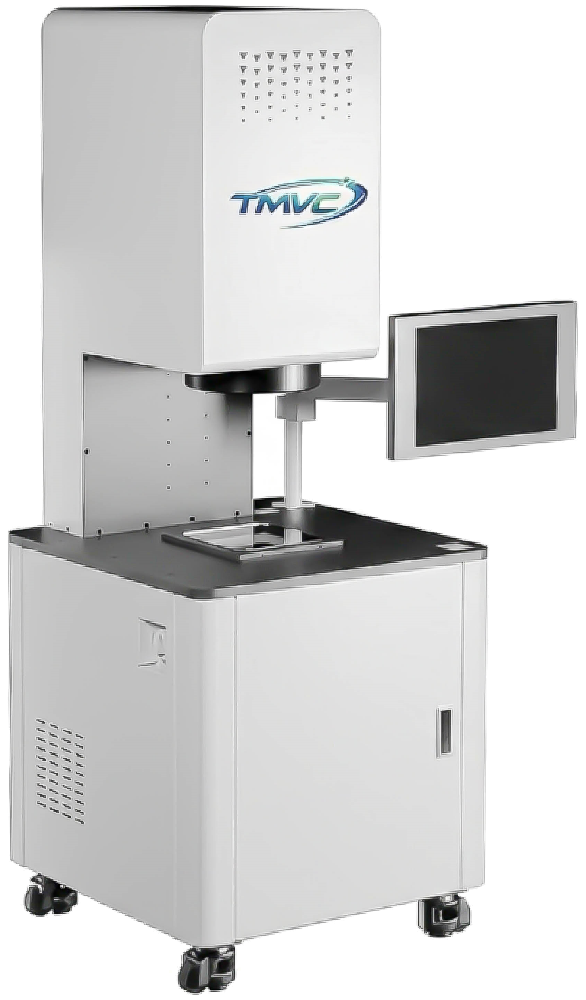

量測儀器
自動識別測量，實現快速穩定的輸出產品數據。工件任意放置，一鍵精準測量。


功能與特點
自動識別與一鍵測量
工件可以任意放置，系統自動搜尋並匹配自訂程序，快速識別工件形狀和特徵。
全面測量元素
- 點、線、圓：直徑、周長、面積
- 弧、矩形、橢圓：長寬、長短軸
- 圓柱與密封圓：厚度、大小半徑
標註與誤差判斷
- 尺寸標註：X/Y距離、半徑、角度
- 形狀誤差：直線度、圓度
- 位置誤差：平行、垂直、同心度
數據輸出與統計
支援自訂 Excel 報表，內建 CPK 模板，自動計算平均值、最大最小値及 CP/CPK 統計參數。
支援多樣座標系統
具備高度靈活性的量測系統，支援多種座標與即時轉換：
- 笛卡爾座標系 (X, Y)：標準工業量測基礎。
- 極座標系 (R, θ)：針對圓形零件、旋轉對稱件優化。
- 即時轉換：量測單位、座標平移與旋轉即時生效。
XY & Rθ 座標系統示意